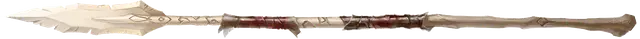

Сеющий разорение
Ruin’s Wake
Оружие (копье), артефакт (требуется настройка)

Это копье сделано из кости древнего золотого дракона и на нем вырезан орочий гимн посвященный Груумшу.
Разум. Сеющий разорение -это разумное оружие хаотично злого мировоззрения с Интеллектом 20, Мудростью 16 и Харизмой 22. У него есть нормальный слух и тёмное зрение на расстоянии 120 футов Оружие телепатически общается со своим владельцем и может говорить, читать и понимать Общий, Орочий и язык Бездны.
Индивидуальность. Обожающий убивать балор [balor] по имени Ярровиш живет в сеющем разорение. Все чего хочет оружие - это проливать кровь и подталкивает своего владельца к решению проблем с помощью насилия.
Дремлющий. В дремлющем состоянии копье даёт следующие преимущества:
- Вы можете говорить, читать и писать на Орочьем и языке Бездны.
- Вы получаете бонус +1 к броскам атаки и урона, совершаемым с помощью этого магического оружия, и оно дополнительно наносит 1к8 колющего урона любой цели, по которой попадает атака. Сразу же после того, как вы совершаете дальнобойную атаку этим оружием, оно возвращается обратно в вашу руку.
- Реакцией, когда по вам попадают рукопашной атакой, вы можете с преимуществом совершить рукопашную атаку с помощью Сеющего разорение против атакующего. Вы не можете использовать это свойство снова, пока не закончите короткий или продолжительный отдых.
Пробуждённый. Когда копье достигает пробуждённого состояния, оно приобретает следующие свойства:
- Бонус к броскам атаки и урона увеличивается до +2, а дополнительный колющий урон, наносимый оружием, увеличивается до 2к8.
- Когда вы метаете копье и произносите командное слово, оно превращается в молнию, образуя линию шириной 5 футов, которая простирается от вас к существу, которое вы можете видеть в пределах 120 футов от вас. Каждое существо на линии, исключая вас, должно совершить спасбросок Ловкости Сл 15, получая 8к6 урона электричеством при провале или вдвое меньше урона при успехе. После чего Сеющий разорение возвращается в вашу руку. Это свойство не может быть использовано снова до следующего рассвета.
Возвышенный.Когда копье достигает возвышенного состояния, оно приобретает следующие свойства:
- Бонус к броскам атаки и урона увеличивается до +3.
- Держа копье, вы можете бонусным действием издать боевой клич. Каждое существо, выбранное вами в пределах 30 футов от вас, получает преимущество на броски атаки до начала вашего следующего хода. Это свойство не может быть использовано снова до следующего рассвета.
- Когда вы уменьшаете хиты существа до 0 с помощью атаки копьем, вы можете восстановить себе количество хитов, равное урону, который вы нанесли этой атакой. Это свойство не может быть использовано снова до следующего рассвета.
Свойства артефакта Предателя
Оружие Предателей набирает силу точно так же, как и Отголоски Дивергенции. В Дремлющем состоянии каждый из этих артефактов обладает одним малым положительным свойством и одним малым отрицательным свойством. Когда артефакт достигает Пробуждённого состояния, он приобретает дополнительное малое положительное свойство и малое отрицательное свойство. Когда предмет достигает своего Возвышенного состояния, он приобретает основное положительное свойство.